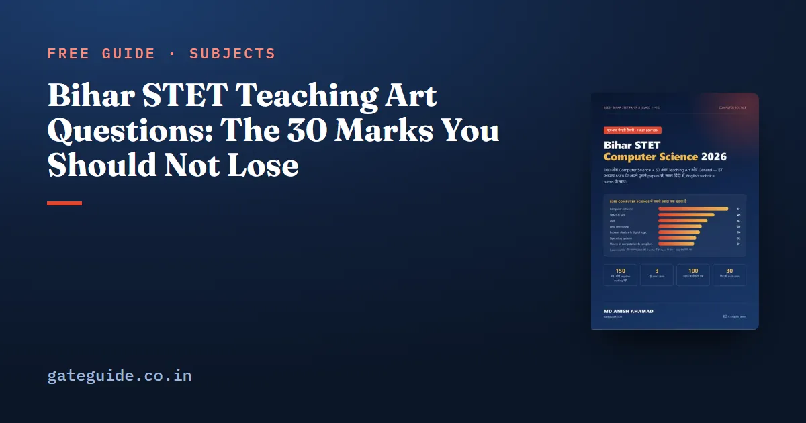

Bihar STET Teaching Art Questions: The 30 Marks You Should Not Lose

In the Bihar STET Computer Science paper, Teaching Art is the easiest part to score in — and the part most candidates prepare last. About 30 of the 150 questions in the November 2025 shifts came from it, and the questions are short facts that return year after year: who started microteaching, what Bloom's highest level is, which of Piaget's stages a Class 11 student is in. This guide collects those facts in one place.
In this guide
Key takeaways
- About 30 Teaching Art questions in the 50-mark general part (2025).
- The core: levels and phases of teaching, maxims, methods, Bloom's taxonomy, microteaching, learning theories, evaluation, inclusive education and policy.
- Most questions ask "who gave" or "what is" — a fact list works better than long reading.
- Learn the names: Herbart, Morrison, Hunt, Kilpatrick, Armstrong, Skinner, Piaget, Vygotsky, Bloom.
Teaching: levels, phases and maxims
Levels of teaching. Memory level (Herbart) → understanding level (Morrison) → reflective level (Hunt). The reflective level is the highest: students solve problems and think for themselves.
Phases of teaching (Jackson). Pre-active (planning), interactive (teaching in class) and post-active (evaluation and feedback). Writing objectives and a lesson plan is pre-active work.
Maxims of teaching. Known to unknown, simple to complex, concrete to abstract, particular to general, whole to part, and analysis to synthesis. In a computer science class, showing a real keyboard before defining an input device is "concrete to abstract".
Methods of teaching
| Method | Associated name | Key idea |
|---|---|---|
| Project method | W. H. Kilpatrick | Learning through a real task, such as building a website |
| Problem-solving method | John Dewey | Students define and solve a problem |
| Heuristic method | H. E. Armstrong | Students discover facts themselves |
| Programmed instruction (linear) | B. F. Skinner | Small steps with immediate feedback |
| Branching programme | Norman Crowder | A wrong answer leads to a remedial branch |
| Inductive method | — | Examples first, then the rule |
| Deductive method | — | Rule first, then examples |
A frequent question: which method is best for introducing a new concept? The inductive method, because it builds the rule from the learner's own examples.
Bloom's taxonomy
Bloom (1956) divided educational objectives into three domains: cognitive (knowledge and thinking), affective (feelings and values, classified by Krathwohl) and psychomotor (physical skills).
The cognitive levels in the 2001 revision by Anderson and Krathwohl are: remember, understand, apply, analyse, evaluate and create — create being the highest. In the original 1956 order, evaluation was the highest.
Microteaching
Microteaching began at Stanford University in 1963 (D. W. Allen and colleagues) and was introduced in India by D. D. Tiwari. One skill is practised at a time with 5–10 students for 5–10 minutes. The Indian cycle takes 36 minutes: teach 6, feedback 6, re-plan 12, re-teach 6, re-feedback 6. Typical skills: introducing a lesson, questioning, stimulus variation, reinforcement, explaining and blackboard writing.
Learning theories and development
| Psychologist | Theory | Remember it by |
|---|---|---|
| Pavlov | Classical conditioning | Dog, bell and saliva |
| Thorndike | Trial and error | Cat in a puzzle box; laws of readiness, exercise and effect |
| Skinner | Operant conditioning | Rat and pigeon; reinforcement |
| Köhler | Insight learning | Chimpanzee Sultan |
| Piaget | Cognitive development | Four stages; formal operational from 11 years |
| Vygotsky | Social constructivism | Zone of proximal development, scaffolding |
| Bandura | Social learning | Bobo doll experiment |
| Gardner | Multiple intelligences | Eight intelligences |
Adolescence (about 12–18 years) was called a period of "storm and stress" by Stanley Hall — a common question.
Evaluation
- Formative — during teaching, to improve learning.
- Summative — at the end, to grade or certify.
- Diagnostic — to find the cause of a weakness, followed by remedial teaching.
- Reliability — the test gives consistent results. Validity — it measures what it claims to measure. Objectivity — the examiner's opinion does not change the score.
- Continuous and Comprehensive Evaluation (CCE) — assessment through the year, of scholastic and co-scholastic areas.
Inclusive education and policy
- Inclusive education — all children, including children with disabilities, learn in the same classroom.
- Learning disabilities — dyslexia (reading), dysgraphia (writing), dyscalculia (mathematics).
- RTE Act 2009 — free and compulsory education for ages 6–14 under Article 21A; 25% of seats in private schools for weaker sections; Section 17 bans physical punishment.
- NEP 2020 — a 5+3+3+4 school structure; Classes 11–12 belong to the secondary stage (ages 14–18).
- Kothari Commission (1964–66) — "the destiny of India is now being shaped in her classrooms".
Common traps
Two versions of Bloom. If the options include both "evaluation" and "create", the question is about the 2001 revision and the answer is create. If "create" is absent and the question says 1956 or "original", the answer is evaluation.
Bipolar and tripolar. John Adams described teaching as a bipolar process between teacher and student. The tripolar view — teacher, student and curriculum — is most often credited to John Dewey in exam keys, and to Bloom in some books. Read all four options before choosing.
Inductive and deductive. Inductive moves from examples to the rule; deductive applies a given rule to examples. A quick way to remember: in the inductive method the learner is led into the rule.
Formative and diagnostic. Both happen during the course, but formative evaluation improves learning in general, while diagnostic testing looks for the cause of a specific difficulty and is followed by remedial teaching.
Reliability and validity. A test can be reliable without being valid — a scale that always reads two kilograms heavy is consistent but wrong. Validity is the stronger requirement.
Practice questions
- Who proposed the reflective level of teaching? Hunt.
- The highest level of the revised Bloom's taxonomy? Create.
- Project method was introduced by? Kilpatrick.
- Concept of scaffolding is linked to? Vygotsky.
- Re-planning time in the Indian microteaching cycle? 12 minutes.
- Evaluation done during teaching is? Formative.
- Difficulty in writing is called? Dysgraphia.
- NEP 2020 school structure? 5+3+3+4.
For the same topic seen from another exam, our DSSSB teaching methodology guide has more practice questions. The full pattern of Paper II is in the syllabus and exam pattern guide, and when to study this part is in the preparation strategy.
Study tip: write each name in this guide on one side of a card and the idea on the other, and go through the pack for ten minutes every two or three days. Spaced revision of this kind fixes names far better than reading the same page for an hour.
Summary
- About 30 Teaching Art marks in 2025 — prepare them early.
- Levels: Herbart, Morrison, Hunt. Phases: pre-active, interactive, post-active.
- Bloom's revised top level: create. Microteaching: Stanford 1963, 36-minute Indian cycle.
- Piaget's formal operational stage fits Classes 11–12.
- RTE 2009 and NEP 2020 facts are asked every year.
Frequently asked questions
How many Teaching Art questions come in Bihar STET Paper II?
The 50-mark general part of Paper II had about 30 Teaching Art questions in the November 2025 shifts. The remaining twenty or so were general knowledge, environmental studies, mathematics and reasoning, roughly five each. The split is not fixed by a notification, so treat it as a guide.
What is the Indian microteaching cycle time?
Thirty-six minutes: teach for 6 minutes, receive feedback for 6, re-plan for 12, re-teach for 6 and receive re-feedback for 6. Microteaching itself began at Stanford University in 1963 under D. W. Allen and practises one teaching skill at a time with a small group.
Which stage of Piaget applies to Class 11 and 12 students?
The formal operational stage, which Piaget placed from about 11 years onwards. Students at this stage can think abstractly and reason about hypotheses, which is why algorithms, logic and theory can be taught to them directly rather than only through concrete examples.
What is the difference between formative and summative evaluation?
Formative evaluation happens during teaching to find gaps and improve learning, through class questions, quizzes and feedback. Summative evaluation happens at the end of a term or course to grade or certify the learner, as in a final examination. Diagnostic tests find the cause of a weakness before remedial teaching.
Sources
- Bihar School Examination Board official website
- National Education Policy 2020, Ministry of Education
Dates, the pattern and pass marks are set by BSEB and can change. Always confirm at biharboardonline.bihar.gov.in. GATE Guide is not affiliated with BSEB.